|
||||
Chapter 3.6 |
||||
The Maps
|
||||
Maps Section
The maps section is where you compose the tiled maps for your project. These maps are edited by a special plug-in to Hieroglyph called Genesis. To open a map in the Genesis map editor double click on it.
What is Genesis?
Genesis is a tool for creating and editing background maps that can be used in games. A lot of games have a large area (usually much larger than the screen) that the player can move around freely, if these maps were stored as large pictures then the memory required for the backgrounds would be far too much.
Fortunately, Genesis maps can used to get around this problem. Usually, most backgrounds are made up of simple pictures (tiles) that are repeated throughout the map. Genesis can take a small picture and then break it into tiles of any size (as long as they are all the same size). It can then be used to produce a map that is simply a large image made up of these smaller 'tiles'. This saves a lot of memory because all Genesis needs to produce a large image is a small picture of what all the tiles look like and then some data telling it which tiles to put where.
What is a Map?
A map is resource that Genesis can produce and edit, it is a series of tiles that are put together to make a much larger image. These maps can be loaded into TNT Basic easily using specialised commands and then used in games.
Creating and Setting up a Map
In the Maps section, choose 'Create new TNT Map...' from the 'Resource' menu.
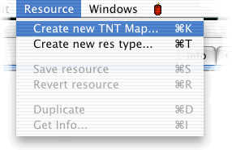
Once you give the map a name and a number it will be created and then automatically opened for you.
Setting the Map Properties
The map that you have created is a small, empty map. You will probably want to make the map larger than this so that you can work with it. You can do this by setting the map dimensions. Choose 'Set Map Dimensions' from the 'Genesis' menu.
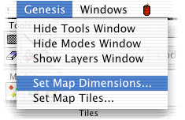
You should now see a dialog that looks like this:
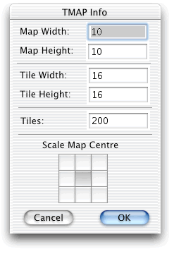
This dialog allows you to change the size of the map and tiles and set the number of tiles to cut out of the picture.
Map Width/Height
The size of the map in tiles.
Tile Width/Height
The size of the tiles in pixels.
Tiles
The number of tiles to cut out of the tile picture.
Scale Map Centre
If you have changed the size of the map then certain areas will need to be added or removed. This control lets you choose where to create or remove the tiles from (e.g. if you position the centre at the top left then when the map is scaled the tiles will be added or removed from the bottom left, if you leave it in the centre then the tiles will be created or removed from all sides).
Setting the Map Tiles
In order to use some tiles that you have already drawn you must first add the picture to the TNT Basic project. Genesis also has to be told which picture to use, this can be done by choosing 'Set Map Tiles' from the 'Genesis' menu.
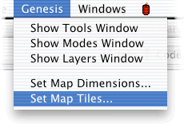
You can then specify the number of the picture to use as tiles. If you replace the picture with another you don't have to set the map tiles again because Genesis will remember the number of the picture you last set. You can also set the map tiles by dragging a picture from the pictures list and onto the map.
Once Genesis has picture to make tiles from it cuts the tiles out (the size of the tiles depends on what has been set in the map dimensions). This means that all of the tiles are extracted from just one picture.
Editing Modes
There are 4 different editing modes supported in Genesis.
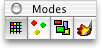
This is the modes dialog, clicking on each of the buttons switches between the editing modes.
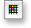Tile Drawing Mode
This is the main mode of Genesis and is used for placing and removing tiles.
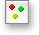Object Editing Mode
In this mode, objects can be placed on the map. Objects can be used to represent things in the world (e.g. the Player, Enemies, Power-Ups etc)
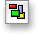Polygon Editing Mode
In this mode, polygons can be placed on the map. Polygons are made up of a series of rectangles and can be used to specify areas of the map (e.g. Safe Zones)
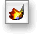Easy Draw Mode
This mode is currently inactive but will be used in future version of Genesis.
Editing Tools
The tools in Genesis are similar to the drawing tools in an ordinary paint package.
Pencil
Pencil simply places the current tile/object wherever you draw with it.
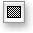Rectangle
This places the current tile/object/polygon at the position and size you draw it. To start drawing this, click the mouse in one corner and then move to the opposite corner while holding the mouse button down.
Line
This places the current tile/object in a line between the specified points. To start drawing with this, click the mouse at the start of the line and then move the mouse to the other end while holding the mouse button down.
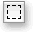Selection
This tool can be used to select, move and delete tiles/objects/polygons.
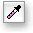Pippet
This sets the current tile/object/polygon to whatever you click on.
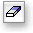Eraser
This removes the tile/object/polygon that you click on.
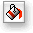Paint Can
This fills an area with the current tile.
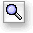Magnify
This magnifies the map so it is easier ot see. Clicking normally zooms in, option-clicking zooms out.